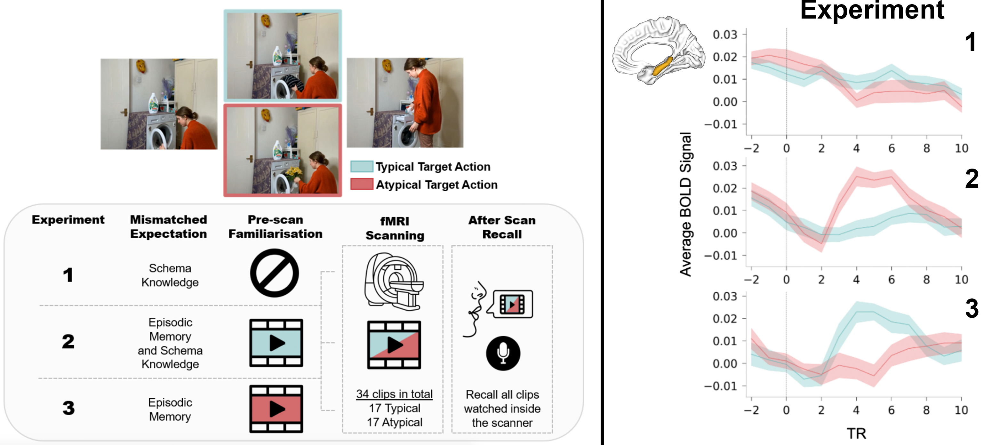

Does the hippocampus detect mismatches based on specific memories or general knowledge?
In this project, we were interested in how the brain detects when something unexpected happens — and whether it uses specific past experiences or generalised knowledge to do so. Imagine seeing your friend in an unusual outfit. Do you notice the mismatch because it violates general fashion rules or because it doesn’t match what they wore last time you saw them? To test this, we ran three fMRI experiments where participants viewed events that either contradicted a recently learned specific memory or violated a broader semantic expectation (how do you usually make breakfast). We found that the hippocampus responded selectively to mismatches with episodic memories, but not to schematic inconsistencies. The episodic mismatches apart from engaging the hippocampus were accompanied by increased default mode network BOLD activity in line with this network’s role in episodic memory. In contrast, schematic violations seemed to be handled outside the hippocampal system entirely. These more general mismatches instead engaged frontal and subcortical circuits linked to cognitive control and error processing. So, rather than acting as a general mismatch detector, the hippocampus seems specialised for spotting violations of specific remembered experiences, not abstract knowledge. This adds to emerging evidence that different kinds of predictions — episodic vs schematic — are supported by different brain systems.
p doi:10.1073/pnas.2503535122